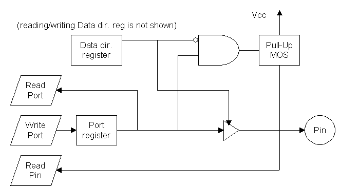

The AVR I/O Ports are pretty simple to understand. They have a Port register, a Data Direction register and a Pin register. These are part of every I/O port in every AVR. Here's a drawing of their basic functionality:

As you can see, there's an internal pull-up for every pin. It can be activated by setting the DDR bit of the pin to 0 and the Port bit to 1. A cleared DDR bit means that the pin is an input pin. So the pin is disconnected from the Port register (see the driver in the drawing?) and the pin is floating. In this case the Port bit controls the pull-up. I have not drawn boxes for writing/reading the data direction bit, because it would only make the drawing more complex.
Why I actually made the drawing for is not only describing the pull-up, but also to explain a mistake many people make, even experienced programmers, just because it doesn't "hit the eye":
When the actual state of a port pin is needed (which is not necessarily the Port bit value), often the Port bit is read instead of the pin bit (by mistake). The Pin bit is directly connected to the physical pin. The port bit can be disconnected from the pin via the data direction register. So if you have problems with your I/O code, check for this mistake first.
Here's a table with the possible Port/DDR cominations and what they do to the pin:
|
DDR bit = 1
|
DDR bit = 0 | |
|---|---|---|
| Port bit = 1 | High | pull-up |
| Port bit = 0 | Low | floating |
Reading from/writing to the ports can be done bit-wise or byte-wise (whole port), on Pin, Port, and Data Direction registers.
The drawing above is just a simple one. As many Port pins have special functions, their values are also controlled by the internal peripherals, like the pins of the UART or SPI. These are more complex and can be looked at in the datasheets.